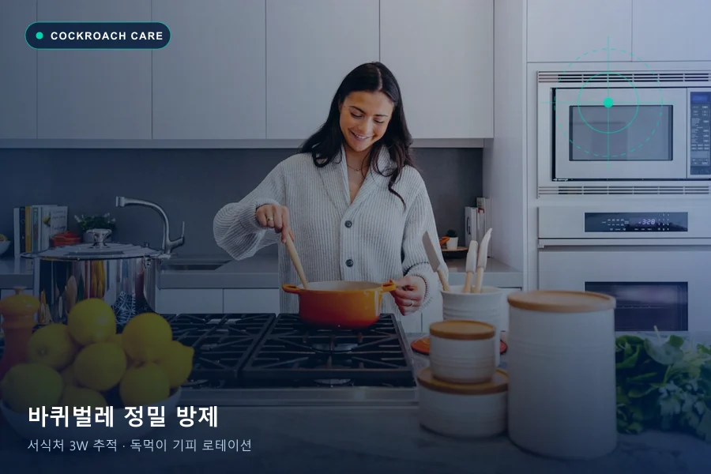

해충방제·방역소독 통합 서비스, 발생 원인(3W)과 공간 조건에 맞춰 설계합니다.
에코플랜은 해충 종류와 생활사, 건물 구조, 이용자 및 영업 환경을 조사해 방제 방법을 정합니다. 3W 원인 진단부터 계열별 허가 약제 로테이션, 침입 경로 차단, 사후 모니터링까지 연결합니다.
4대 핵심 위생해충 정밀 방제 솔루션
해충의 실내 유인 요인(Why)·침입 경로(Where)·활동 주기(When)에 맞춘 해충별 전문 관리

바퀴벌레 맞춤 솔루션
숨은 서식처와 유입 경로까지. 3W 발생 원인 진단부터 서식처 원천 차단과 정기 모니터링까지 체계적으로 관리합니다.

쥐 맞춤 솔루션
침입 차단부터 지속적인 모니터링. 3W 발생 원인 진단부터 서식처 원천 차단과 정기 모니터링까지 체계적으로 관리합니다.

파리·초파리·나방파리 맞춤 솔루션
발생원을 찾아 다시 생기지 않도록. 3W 발생 원인 진단부터 서식처 원천 차단과 정기 모니터링까지 체계적으로 관리합니다.

모기 맞춤 솔루션
성충과 유충, 생활사를 함께 관리. 3W 발생 원인 진단부터 서식처 원천 차단과 정기 모니터링까지 체계적으로 관리합니다.
개미·저곡해충·먼지다듬이·지네 3W 관리 안내
4대 주요 해충 외에도 식자재 보관 공간과 주거·외곽 환경에서 발생하는 특수·침입 해충을 동정해 3W 기준으로 맞춤 관리합니다.
개미 · 저곡해충 (권연벌레·화랑곡나방)
창틀·걸레받이·타일 줄눈의 개미 이동 통로에는 여왕개미까지 연쇄 작용하는 전용 독먹이 겔을 적용합니다. 곡물·건어물·반려동물 사료 포대에서 발생하는 권연벌레·화랑곡나방은 감염 원천 품목 판별과 페로몬 트랩 모니터링을 병행합니다.
먼지다듬이 · 진드기 (고습도 미세해충)
신축 공동주택, 원목 가구, 책장·벽지 틈새의 고습도(상대습도 60% 이상)·결로 환경에서 발생하는 미세해충입니다. 정확한 해충 동정 후 미세 틈새 전용 약제 처리와 온·습도 환경개선 가이드를 함께 안내합니다.
지네 · 노래기 등 외곽 침입 해충
1층 매장·전원주택·지하층의 외벽 균열, 창틀 물구멍, 화단·낙엽 적치물 주변을 통해 유입됩니다. 건물 외곽 침입 차단 벨트(잔류 분무·입제 처리) 구축과 유입 틈새 보수 제안을 연결합니다.
| 대상 해충 | 3W 발생 원인 (Why · Where · When) | 1~3단계 서식 판별 기준 | 에코플랜 핵심 처방 및 주의사항 |
|---|---|---|---|
| 개미 · 저곡해충 (권연벌레·화랑곡나방) | Why: 당분·단백질 잔여물, 오래 보관된 곡물·건어물·사료 Where: 창틀·걸레받이·타일 줄눈, 팬트리·창고 개봉 포장재 When: 페로몬 경로 형성 시 줄지어 이동, 장기 보관 시 급증 | 1단계: 간헐적 1~5마리 미만 목격 2단계: 줄지어 이동하거나 보관장 주변 10마리 내외 3단계: 다수 구역 동시 출현 및 식자재 오염 우려 | 개미 이동 행렬에 에어로졸 살충제를 뿌리면 군집이 쪼개져 확산되므로 전용 독먹이 겔로 연쇄 제거하며, 저곡해충은 감염 포장재 밀봉 폐기 후 페로몬 트랩으로 관리합니다. |
| 먼지다듬이 · 진드기 · 지네 (특수·외곽 침입충) | Why: 실내 고습도(60% 이상)·결로·미세 곰팡이(먼지다듬이), 외부 화단·낙엽 습기(지네) Where: 신축 아파트·원목 가구·벽지 틈새, 1층·지하 외벽 틈 When: 장마철·환절기·신축 입주 초기 및 야간 활동 증가 | 1단계: 특정 위치 1~3마리 미만 간헐 목격 2단계: 같은 방·가구·창틀에서 매주 반복 출현 3단계: 여러 공간 매일 다수 목격 및 생활 불편 심화 | 실내 상대습도를 45~50% 이하로 낮추고 외벽 낙엽·화분 은신처를 정리합니다. 해충 동정 후 외곽 침입 차단 벨트 구축 및 미세 틈새 전용 약제 처리를 진행합니다. |
방역소독은 어떻게 진행하나요?
대상 공간과 표면의 상태, 환경부 허가 3가지 계열 살균제의 적용 범위를 먼저 확인합니다.
대상과 범위 확인
공간 용도와 이용자(영유아·환자·반려동물 유무), 고빈도 접촉 표면, 식품·조리도구 노출 여부를 사전 확인합니다.
현장별 처리 방법 선정
환경부 허가 3가지 계열 살균제의 용도, 오염도·표면 재질별 희석 농도, 적용 방법과 접촉시간 등 표시사항에 따라 작업 계획을 세웁니다.
환기·재입실 안전 안내
작업 후 환기 시간, 재입실 조건, 청소 가능 범위 및 접근 제한 등 제품과 작업 방식에 필요한 주의사항을 안내합니다.
소독의 효과와 적용 가능 범위는 대상, 제품, 작업 조건에 따라 달라집니다. 다중이용시설 법정 소독이나 사업장 정기 소독 여부는 상담 시 시설 특성을 알려주세요.
업종·면적별 비용 결정 기준 및 해충방역 업체 선택 비교표
식당·사업장·가정집 방제 견적 산정 기준과 전문 방제업체 선택 시 확인해야 할 핵심 기준입니다.
1. 업종·면적·관리 방식별 방제 구성 및 비용 결정 기준
| 공간 구분 | 주요 점검·적용 범위 | 권장 관리 주기 | 비용(견적) 산정 핵심 변수 |
|---|---|---|---|
| 가정·공동주택 (원룸·빌라·아파트 세대) | 주방 싱크대 경첩·가전 모터부 독먹이 도포, 욕실·발코니 배수구 유충/트랩 점검, 창틀·배관 유입 틈새 진단 | 초기 집중방제 (1~2회) 또는 분기·정기 케어 | 전용면적(평형), 발견 해충 종류(독일바퀴·미국바퀴·먼지다듬이 등), 서식 단계(1~3단계) |
| 소형 외식업장·카페 (약 20평 이하) | 화구·냉장고·제빙기 뒤편 바퀴벌레 군집 제어, 배수 트렌치·그리스트랩 유충구제, 매장 포충기 운영 | 월 1회 정기 IPM 관리 (초기 오염 시 집중케어 병행) | 주방 설비 밀집도, 배수구·그리스트랩 구조, 영업 외 작업 시간대, 포충기 대수 |
| 중대형 식당·뷔페·프랜차이즈 (20~100평+) | 홀·샐러드바·조리실·식자재 창고 구역 분리 관리, 외곽 방서 디펜스라인, 계열별 약제 로테이션 및 포획 추이 보고 | 월 1~2회 이상 정기 IPM + 본사·지점 표준 리포트 | 총 면적 및 구획 수, 외부 하역장·폐기물장 유무, 지점 수(프랜차이즈 다점포 계약 조건) |
| HACCP·GMP 식품공장 · 물류창고 · 빌딩 | 4대 방어선(외곽·외벽·내부·모니터링) 구축, 지하 정화조 유충구제, 해충 동정·카탈라제 효소/이물분석 및 법정 소독 연계 | 시설 규격 맞춤형 정기 관리 (월 1~4회 협의) | 연면적·동수, 지하 정화조·집수정 규모, 모니터링 트랩·포충기 수량, 분석보고서 범위 |
2. 해충방역 업체 선택 기준 비교표 (일반 소독 vs 에코플랜 3W·IPM)
| 비교 항목 | 일반 일회성 살포 소독 | 에코플랜 3W · IPM 과학 방제 |
|---|---|---|
| 사전 원인 진단 | 육안 확인 후 일률적 약제 분무 | 3W(Why 유인요인 · Where 침입경로 · When 활동주기) 및 1~3단계 서식 밀도 정밀 진단 |
| 약제 선정 및 내성 관리 | 단일 성분 반복 살포로 내성·기피 발생 가능 | 환경부 허가 약제 기준, 피레스로이드·네오니코티노이드·CS캡슐 교차 및 독먹이 기간별 로테이션 |
| 비래해충 · 정화조 모기 대응 | 날아다니는 성충 위주 일시적 연막·분무 | 배수구 슬러지·지하 정화조 유충(장구벌레·나방파리) 원천 구제 + 공간 동선별 포충기 파장 설계 |
| 전문 인력 교육 및 자격 | 단순 작업 인력 파견 여부 확인 어려움 | 법정교육·방제전문가·위해생물방제사·모기 동정 수료 및 연 2회 이상 학술 세미나·보수교육 이수 |
| 이물 · 클레임 원인 규명 | 육안 추정 위주로 제조·유통 분쟁 대응 한계 | 카탈라제(Catalase) 효소 반응 실험, 공정 재현실험, 제3자 기관 유전자·이물분석 및 보고서 지원 |
| 사후 관리 기록 및 피드백 | 단순 작업 완료 확인서 위주 | 6대 관리 기록(발생위치·포획추이·작업내역·시설개선 제안·사후확인·차기계획) 데이터 관리 |
사전조사 (3W 진단)
발생 이유(Why)·침입 경로(Where)·활동 시간(When) 3W 정밀 분석
계획수립 (IPM 설계)
해충의 생활사·행동 패턴과 시설 기준에 맞춘 방제 전략·주기 수립
맞춤 방제 & 약제 로테이션
계열별 허가 약제·장비 적용과 환경개선 제안을 동시에 실행
평가 · 사후 모니터링
포획·발생 기록으로 현 수준을 평가하고 재발 방지 기준 고도화
방제 서비스·비용·업체 선택 자주 묻는 질문
식당·외식 매장의 바퀴벌레·해충 방역 비용은 어떻게 결정되나요?
외식 매장의 방제 비용은 ① 매장 전용면적(평수)과 주방·창고·외부 테라스 구조, ② 현재 해충 서식 단계(1단계 초기 유입 vs 2~3단계 군집 번식), ③ 관리 방식(1회 초기 집중방제 vs 월 정기 모니터링 관리), ④ 포충기·방서 상자 등 장비 임대·구매 여부에 따라 산정됩니다. 정확한 견적은 무료 3W 현장 진단 후 안내합니다.
해충방역 업체를 선택할 때 반드시 비교해야 할 기준은 무엇인가요?
① 단순 살포가 아닌 3W(Why·Where·When) 사전 원인 진단을 수행하는지, ② 환경부 허가 약제를 사용하고 내성·당분 기피를 막는 계열별 로테이션 기준이 있는지, ③ 법정 교육 및 위해생물방제사 등 전문 교육을 수료한 인력이 직접 방문하는지, ④ 작업 후 6대 관리 기록(포획 추이·사용 약제·시설 개선 권고)과 이물·클레임 분석 지원이 가능한지 확인해야 합니다.
프랜차이즈 본사에서 여러 가맹점을 통합해서 정기방역 계약을 맺을 수 있나요?
네, 외식·유통 프랜차이즈 본사 기준에 맞춘 표준 3W·IPM 위생 매뉴얼을 수립하여 가맹점별 정기 점검, 신규 오픈 매장 사전 방충·방서 설계, 점포별 관리 기록과 클레임·이물 발생 시 신속 분석 대응을 통합 지원합니다.
• 작성·검토 주체: 주식회사 한국에코플랜 기술연구소 · 위해생물방제사 기술지원팀 (대표 김영태 · 고객센터 1688-4587)
• 최초 구성일: | 최종 개정·검수일:
• 참고 법령 및 1차 공공 기준: 환경부 초록누리(살생물제 승인기준) ↗ · 질병관리청 감염병 매개체 종합방제(IPM) 지침 ↗ · 한국식품안전관리인증원(HACCP 방충·방서 기준) ↗ · 감염병예방법 소독기준 ↗
• 공식 채널 확인: 에코플랜 공식 도메인(ecoplan.co.kr) ↗ · 스마트캐치 공식 네이버 스마트스토어 ↗ · 현장 맞춤 상담 신청